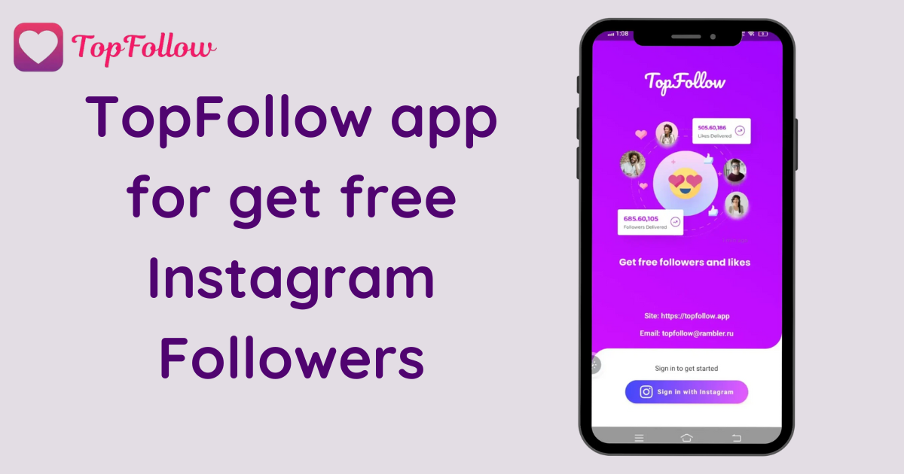

Are you tired of waiting for Instagram followers and likes to build up slowly? Do you want a faster way to boost your profile and increase your influence? Well, you're in luck! With the TopFollow APK, you can now get unlimited Instagram followers and likes without breaking a sweat. All you need to do is download now, and you’re on your way to social media stardom. But hold on, let's dive into what this magic app does, how you can use it, and why it's the ultimate solution for Instagram users looking to increase their followers and likes.
First things first, what is TopFollow APK? If you’ve been searching for ways to grow your Instagram followers organically but quickly, you might have stumbled upon TopFollow. It's a popular app that allows you to gain real Instagram followers and likes by simply collecting and spending coins. No more begging friends to like your posts or hoping that your hashtags hit the right spot. You can just sit back and let TopFollow do all the heavy lifting for you.
Not only that, but it’s designed for people who want to stand out on social media without paying for expensive ad campaigns or follower packages. TopFollow APK offers a simple and effective way to boost your online presence—without needing to hack into Instagram’s secret algorithm (not that we'd know how to do that anyway).
Download now, and watch your follower count rise faster than your morning coffee disappears!
So, what makes TopFollow APK stand out in a sea of apps promising Instagram fame? Here are some great reasons why you should download now:
Ready to get started? Here's a step-by-step guide on how to use TopFollow APK to get unlimited followers, likes, and, of course, coins. Because, let’s be honest, the magic of TopFollow happens when you collect those shiny coins and exchange them for Insta fame.
It’s as simple as that. The first thing you need to do is download the latest version of TopFollow APK. Don’t worry about compatibility—this APK works smoothly on most Android devices. Just click on the download button, follow the instructions, and let the magic begin.
Pro tip: Make sure to always download the latest version to enjoy the most up-to-date features.
Once the APK file is downloaded, you’ll need to install it. This part is easy. Just find the APK file in your downloads folder and click on it. If this is your first time installing an APK outside of the Google Play Store, you might need to adjust your settings to allow installation from unknown sources. Don’t worry—it’s perfectly safe.
Tip: If you’re a little paranoid (aren’t we all sometimes?), make sure to scan the APK with an antivirus app. Better safe than sorry, right?
After the installation is complete, open the app and sign in with your Instagram account. Don’t worry; your credentials are safe. Now the fun part—start collecting coins! You can earn coins in various ways, like following other users or liking posts. Think of it as social media karma—what goes around comes around.
Promocode Alert: For an extra boost, use a promocode to get unlimited coins faster. This little trick will save you tons of time and effort. Who doesn’t love a good hack? (Not the shady kind, of course.)
Once you’ve collected enough coins, it’s time to cash them in. You can redeem your coins for real followers and likes. The more coins you have, the more you can grow your Instagram account. It’s like exchanging Monopoly money for real-life rewards!
And now, for the best part—watch your Instagram grow! As soon as you start redeeming coins, you’ll see new followers and likes pouring in. Keep using the app regularly to maintain your growth, and don’t forget to use promo codes for those sweet, sweet unlimited coins.
At this point, you’re probably wondering, “Is this safe?” And that’s a fair question. After all, no one wants to lose their Instagram account to some shady app.
The good news is that TopFollow APK has a solid reputation for being safe and reliable. It doesn’t require any personal information besides your Instagram login, and it doesn’t use any bots or automation that could get your account banned. Just follow the steps, collect coins, and watch your followers increase.
However, as with any third-party app, it’s always a good idea to use it responsibly. You don’t want to gain 10,000 followers overnight and make Instagram’s algorithms suspicious. Slow and steady wins the race, my friends.
So, what are you waiting for? If you’re serious about growing your Instagram and gaining real followers and likes, then Topfollow APK is the app for you. All it takes is a simple download now, and you’re on your way to Instagram fame without the headaches.
Whether you’re a small business looking to increase your brand visibility or just someone who wants to look super popular online, TopFollow has got you covered. Plus, with the use of promocodes, you can collect unlimited coins in no time.
Just remember to keep things balanced—having a ton of followers is great, but don’t forget to also engage with your audience and post awesome content. After all, nobody wants to follow someone who only posts blurry selfies, right?